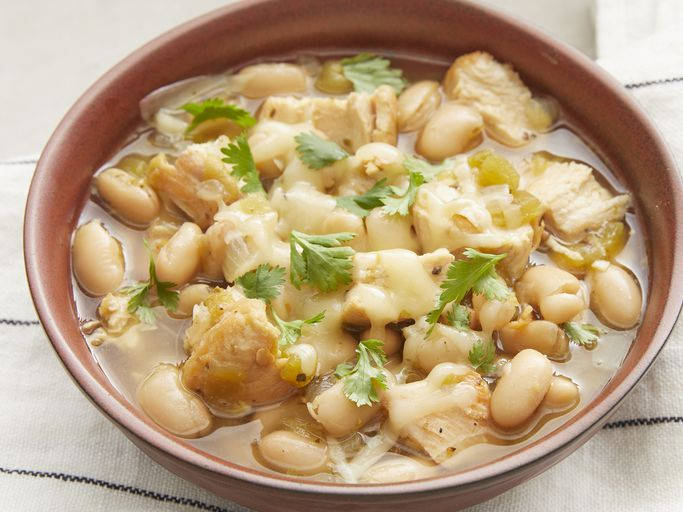

Easy White Chicken Chili

A delicious bowl of White Chicken Chili
An easy to make chili on the lighter side o fhte color pallate. A great chili for when it gets chilly.
Ingredients
- Oil
- Chicken
- Onion and Garlic
- Broth
- Beans
- Green Chiles
- Seasonings
- Cheese
Steps
- Cook chicken, onion, and garlic in hot oil until chicken is brwned on both sides.
- Cut the chicken into pieces, then return it to the Dutch oven.
- Add broth, beans, chiles, oregano, cumin, and ceyenne pepper.
- Bring the mixture to a simmer and cook until the chicken is cooked through.
- Divide cilanro among the bowls, ladle chili over cilantro, and top with cheese.